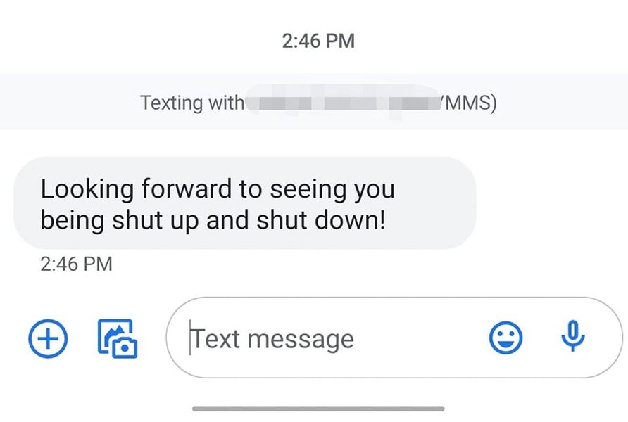

Mobile uploads
There are always a steady stream of people who vehemently hate me. They offer no alternative solutions. Just hate. Hate of me. And hate of the homeless Americans I shelter.
And this hate is directly aligned with the policies of City of Akron, Ohio - Mayor's Office, Dan Horrigan. They both hold the exact same motivation and desires. No solutions. Just hate.